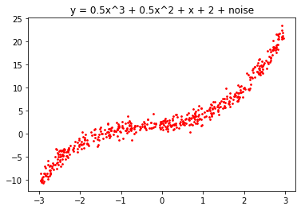
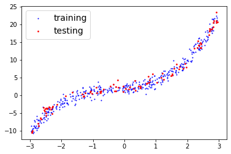
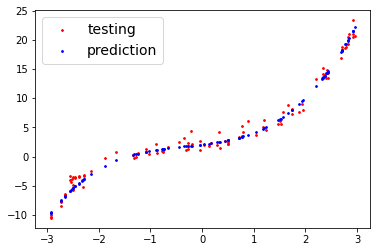
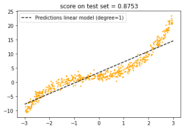
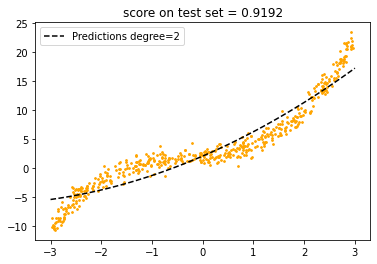
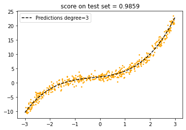
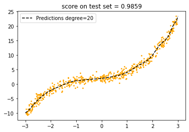
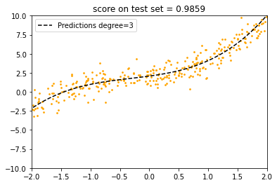
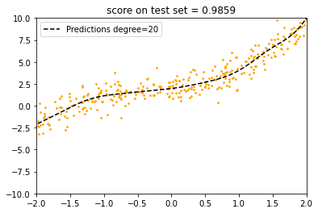

Polynomial Regression
what about non-linear line, we can't draw linear line to fit it.
np.random.seed(42)
X = 6*np.random.rand(500,1) - 3
y = (.5* X**3 )+ (.5 * X**2) + X + 2 + np.random.randn(500,1)
plt.scatter(X,y,s=3, color='red')
plt.title('y = 0.5x^3 + 0.5x^2 + x + 2 + noise');

we can do by add extra column to the feature to make it like multiple degree data, before do that we should seperate data to train and test set.
np.random.permutation(len(y)) # random index order
train_size = int(.8 * len(y)) # train 80% of the data
X_train = X[:train_size] # (400,1)
X_test = X[train_size:] #(100,1)
y_train = y[:train_size] # (400,1)
y_test = y[train_size:] # (100,1)

now we can add feature column to make multiple degree
from sklearn.preprocessing import PolynomialFeatures
# if include bias mean add bias = 1 to first column but we don't need that.
poly_features = PolynomialFeatures(degree=3, include_bias=False)
# we fit and transform X_train to multidegree
X_poly_train = poly_features.fit_transform(X_train)

we add each column by the degree , now we can use LinearRegression model to train it.
from sklearn.linear_model import LinearRegression
Linear_model = LinearRegression()
Linear_model.fit(X_poly_train, y_train)
Linear_model.coef_ , Linear_model.intercept_
# we get >> [1.05725971, 0.46865045, 0.50061545], [2.07186503]
we have original formular : y = 0.5x^3 + 0.5x^2 + x + 2 + noise
but the model predict(because noise) : y = 0.5006x^3 + 0.469x^2 + 1.057x + 2.07
Let's make predictions on the test set
# use scale form X_train to transform(because model train on X_train)
X_poly_test = poly_features.transform(X_test)
y_preds = Linear_model.predict(X_poly_test)
plt.scatter(X_test,y_test,s=3, color='red', label='testing')
plt.scatter(X_test,y_preds,s=3, color='blue', label='prediction')
plt.legend(fontsize=14);

looks good because we select the right degree(degree = 3) but in real world we can't know what is right.


the model with degree = 1 is underfitting (can't fit line perfectly) , on the other hand degree = 20 even score on the set is same as degree = 3 but it's overfitting if you look closer it try to fit with each of the point in the training set(if had more test set it will perform badly).

I will talk about how to make good fit model (like model of degree = 3) in next chapter.
see more information:
- PolynomialFeatures